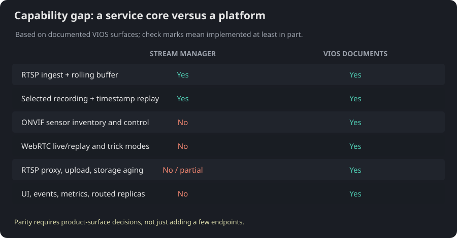
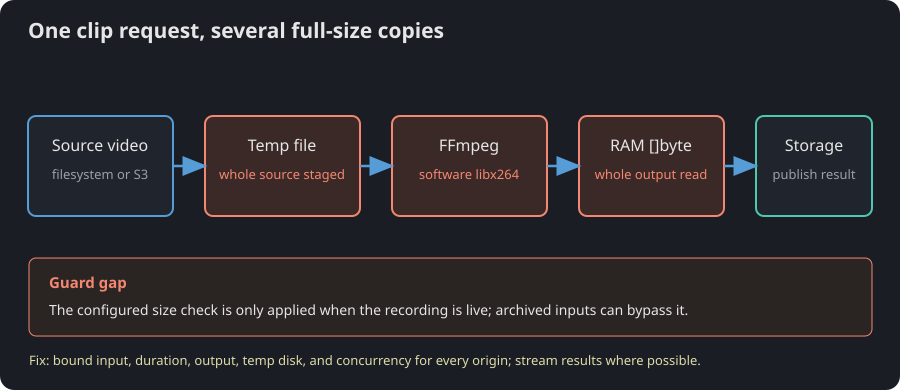
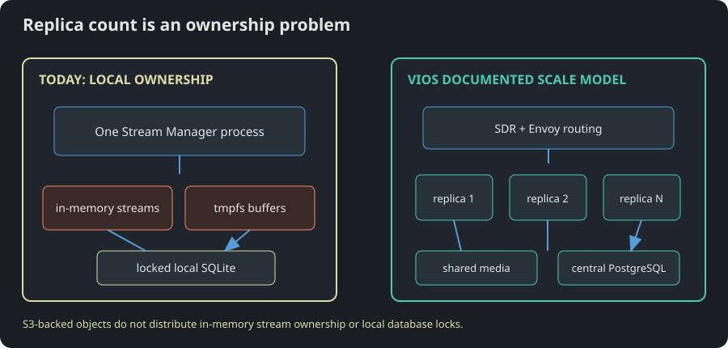

Stream Manager is a promising recorder/retrieval service; VIOS is a video platform. The gap is less "one missing endpoint" and more "several product layers have not been built yet." First fix unauthenticated control routes, unbounded media/resource consumption, and retention that never actually deletes files.
Review snapshot: 2026-10-08. Local implementation: current workspace branch feat/stream-manager-pr, including its uncommitted state. NVIDIA reference: the currently published VSS VIOS documentation. This is a feature comparison, not a claim that VIOS internals or performance are interchangeable with this service.
The current service has a clear and useful center: attach an RTSP source, keep a bounded rolling history, record selected intervals, and retrieve a frame or clip using a timestamp index. The seams between API, stream, recording, replay, and storage are mostly understandable. In particular, storage.MediaStore and the metadata interfaces make it possible to test behavior without binding every service to one backend.
But NVIDIA's VIOS documentation describes a whole operating platform: a sensor-management service plus unified stream processing, RTSP proxying, WebRTC live and replay, recording and storage APIs, shared storage/database, routing for replicas, UI, integrations, and observability. Stream Manager currently has a single API server and no camera UI. Treating these as the same product scope will turn the roadmap into a feature-copying contest. Define a target first: parity with VIOS's recording/retrieval APIs, or parity with the full VIOS platform. The latter is a multi-service program.
NVIDIA's own starting points are the VIOS overview, VIOS API index, and individual sensor, live, record, replay, proxy, and storage API pages.
Major, high confidence: the control plane has no authentication. internal/api/router.go:30 installs request logging, panic recovery, and body limits, then exposes routes; it does not authenticate callers. The stream and record routes are mounted at internal/api/router.go:43. A network-reachable caller can attach sources, consume resources, and delete recordings. The signed /v1/media/{token} URL only protects that media-fetch route; it is not API authorization. Fix: put authentication and per-resource authorization in front of every mutating route, rate-limit requests, and constrain outbound camera destinations at the deployment boundary.
Major, high confidence: there is no stream admission limit. internal/stream/stream.go:149 rejects a duplicate sensor ID, then creates a directory, a rolling buffer, and a long-lived ingest worker; the new stream is added to the process map at internal/stream/stream.go:171. STREAM_MANAGER_MAX_ACTIVE_RECORDS only limits recording workers (internal/config/config.go:116); it does not cap attached streams. Each accepted stream starts its own RTSP/FFmpeg work and consumes tmpfs. Fix: add a configured stream cap, per-tenant quotas, admission based on buffer size/bitrate, and explicit overload responses before opening the camera connection.
Major, high confidence: "S3 support" is not a scalable deployment yet. S3 can serve archived media, but startup only creates the recording service when the backend is filesystem (cmd/api-server/main.go:95). Live stream state and buffer leases are local to the process, while the SQLite implementation takes a process lock and limits the pool to one connection (internal/storage/sqlite_metadata.go:105, internal/storage/sqlite_metadata.go:140). Adding replicas would not share stream ownership, active buffers, or metadata writes. Fix: decide on a distributed ownership model, shared metadata database, shared media store, and routing/affinity strategy before claiming horizontal scaling.
Major, high confidence: replay can turn one request into a disk-and-RAM stress test. internal/replay/extract.go:108 stages the source recording to a temporary file; clip extraction invokes software libx264 (internal/replay/extract.go:124) and reads the complete output into a byte slice (internal/replay/extract.go:134). The configured source limit is checked only for live recordings (internal/replay/replay.go:268), so a large archived/S3 recording can bypass it. Fix: enforce source, duration, output, temporary-disk, and concurrent-extraction limits for every origin; stream output where possible; add hardware acceleration only where supported and measured.
Major, high confidence: derived-media retention is an IOU, not cleanup. FileMediaStore.PutDerived ignores the TTL argument (internal/storage/file_media.go:329). S3 sets an object Expires header (internal/storage/s3_media.go:244), but this code does not configure an S3 lifecycle deletion policy or run a cleanup worker. Repeated frame/clip requests can therefore leave derived files behind indefinitely, filling the persistent volume. Fix: implement and test actual expiration/deletion, expose storage usage, and enforce a capacity policy before filling the disk becomes the garbage collector.

The local architecture is a single Go process: Gin routes call stream, record, and replay services; interfaces isolate SQLite and media backends; FFmpeg handles segmentation/remux/extraction. This is a reasonable compact foundation for a single-node event recorder. The sidecar is a strong design choice: it separates capture wall-clock time from media PTS and makes timestamp lookup explicit.
The mismatch with VIOS is the ownership model. The local stream service owns in-memory stream maps and tmpfs buffers. VIOS documents a sensor-management service, shared PostgreSQL metadata, shared media storage, and multiple unified stream-processing replicas behind SDR/Envoy. S3 object access alone does not make local worker state distributed; it is a storage adapter, not a cluster architecture.
| VIOS capability from its docs | Stream Manager today | Gap to close for parity |
|---|---|---|
| Sensor inventory, ONVIF discovery/control, credentials, configuration, status, network/QoS, reboot, multiple streams per sensor | Manual RTSP/RTSPS URI attachment; one video track; one stream per sensor ID; no sensor-management API | Sensor service/adapters, credential lifecycle, ONVIF Profile S/T discovery and control, sensor inventory, multiple stream profiles, health/QoS |
| Live WebRTC streaming, stream status/stats, snapshots, sub-stream controls | RTSP ingestion feeds a rolling buffer; no WebRTC output or live snapshot API | WebRTC signaling/media path, live snapshot, stream state and quality endpoints, sub-stream model |
| Recording start/stop, cron schedules, event triggers, timeline query, recording status | Fixed-duration or manual start/stop and pre-event history; record list/get/delete | Schedules, event-source integration, timeline endpoint, multi-stream atomic starts, persistent policy configuration |
| Recorded WebRTC playback, seek/play/pause, fast-forward/rewind, recorded snapshot/status/stats | Timestamp-based frame and MP4 clip extraction; no playback session or trick modes | Stateful replay sessions, WebRTC playback, seek and speed controls, snapshots and stream telemetry |
| RTSP proxy, pass-through/multicast and session inspection | Connects as an RTSP client; does not expose an RTSP proxy server or proxy-session API | Proxy service, lifecycle/session routes, TCP/UDP/multicast policy and client access controls |
| Storage API, uploads (including multipart), metadata, usage, downloads, aging policy | Stores live files and derived media; S3 reads archived recordings; manual recording deletion | Upload/download API, multipart upload, media metadata, capacity reporting and enforceable retention/aging; live S3 publishing if required |
| Hardware-accelerated video decode/streaming paths | Ingest copies encoded video; replay clips use software libx264 |
Hardware pipeline selection and supported-device validation, if GPU acceleration is in target scope |
| Reference UI, dashboard, video wall, overlays/floor plans, Milestone VMS adaptor | No UI, video wall, analytics overlay, or VMS adaptor | Separate UI and integration work; decide which visual/adapter capabilities are actually in product scope |
| Redis/Kafka events, Prometheus/Grafana and OpenTelemetry, multi-replica high availability | Structured request logs; no metrics/tracing/event bus; one process per local SQLite/media root | Metrics/traces/events, shared state, service discovery/load balancing, failover behavior and load tests |
The dominant replay cost is doing seek-oriented work on complete files. FFmpeg needs a seekable input, so each extraction stages the recording (internal/replay/extract.go:108, internal/replay/extract.go:154). The clip path then software-encodes and retains the whole result in memory (internal/replay/extract.go:124, internal/replay/extract.go:134). An API that returns a 15-second clip can consequently read and stage a much longer source recording first. There is a 2 GiB configured ceiling, but the check in internal/replay/replay.go:268 only covers actively recording items, not every archived input.
VIOS publishes workload-specific numbers, including up to 70 concurrent 1080p/30fps/4Mbps RTSP streams on an L40 configuration and 20 on an H100 configuration without NVENC, plus request-latency tables. Those figures are tied to stated hardware and test profiles; they are not a fair target to copy into this repo without the same workload and hardware. Stream Manager currently has no comparable benchmark report. Add a reproducible benchmark suite before promising camera counts or replay latency. See NVIDIA's VIOS performance page.

There is also a smaller stampede: publishDerived checks whether an object exists at internal/replay/replay.go:243 and starts extraction at internal/replay/replay.go:248. Concurrent identical cache misses can run FFmpeg more than once. Add per-key single-flight or a short-lived extraction lease after the safety limits are in place.
The service's state boundary is one process. A stream is inserted into an in-memory map (internal/stream/stream.go:171), and SQLite explicitly prevents concurrent process access (internal/storage/sqlite_metadata.go:105). This is a sound guard against two writers corrupting a local deployment, but it is the opposite of VIOS's documented multi-replica topology. Raising replica count today would not make streams highly available; it would make ownership and startup conflicts less predictable.
The first predictable saturation point is likely local tmpfs/process capacity as stream count rises, followed by CPU and temporary disk during concurrent extraction. There is no honest number to attach to that prediction without measurement, so this report does not invent one. Add bounded admission for streams and replay jobs, then profile under fixed codecs, resolution, bitrate, retention, and disk conditions.

The derived cache is valuable, but no per-key request coalescing prevents simultaneous cache misses from duplicating work. The larger waste is writing derived files with a TTL that filesystem storage drops, then keeping them indefinitely. Full-source staging and full-result byte slices also add temporary disk IO and peak memory for every concurrent replay. Apply hard limits and actual expiry before optimizing tiny allocations.
The package boundaries, API reference, Get Started guide, and test coverage give a new Go maintainer a decent route through the code. The stale backlog undermines that good work: docs/todo.md:8 still lists buffer resizing and docs/todo.md:9 lists S3 media support as not implemented, while internal/api/router.go:49 wires buffer resizing and the current code has an S3 media store. docs/todo.md:20 also says to adopt log/slog, already used by startup and request logging. The same TODO contains real open work such as live S3 recording (docs/todo.md:10), multi-stream recording (docs/todo.md:11), stream pagination (docs/todo.md:15), and storage quotas (docs/todo.md:24).
That is how TODOs become archaeology: the checkbox is preserved, but its relationship to the code is not. Replace this file with a status table linking each item to its implementation/test or marking it explicitly deferred. Do not silently remove still-valid items such as live S3 writing or quota enforcement.
The current API serves integrations that want recordings and timestamp-selected assets. It does not yet serve the operator who wants to discover a camera, credentials-check it, watch it in a browser, scrub recorded footage, inspect disk usage, and recover a failed stream from one place. VIOS's UI and sensor/live/replay/storage APIs support that wider workflow. Do not promise "VIOS replacement" to those users until those workflows exist end to end.
The API also has no timeline endpoint or schedule controls; clients must orchestrate record start/stop themselves and poll state. Add schedule/event APIs only after deciding how policies persist across restarts and how duplicate triggers are made idempotent.
Security - Major, high confidence. VIOS documents optional bearer authentication for modifying API operations. This router has no equivalent authentication middleware (internal/api/router.go:30); the media token is a bearer URL for one derived object, not caller identity. Exposing the service beyond a trusted network therefore exposes camera attachment and recording deletion to any reachable client. Add authentication/authorization in the artifact. Restrict outbound RTSP destinations and enforce network segmentation at deployment time. The current RTSP URI validator rejects embedded credentials but does not establish an allowed-host policy (internal/stream/stream.go:140).
Observability - Major, medium confidence. slog access/error logs are present, but no Prometheus metrics, OpenTelemetry spans, or event publication path is wired. Operators cannot answer basic questions such as active streams, buffer pressure, recording failures by reason, extraction queue depth, or per-route latency from metrics. Add low-cardinality metrics and traces with request/recording correlation; avoid putting camera credentials or signed tokens into telemetry.
Storage safety - Major, high confidence. There is no enforced total media quota or automatic aging policy. The TODO itself calls out quota enforcement at docs/todo.md:24; the README tells operators to use persistent storage but cannot protect it from exhaustion. Implement a storage accounting and retention worker, expose capacity and failure signals, and make deletion idempotent.
Deployment - Moderate gap. The component includes a Dockerfile and Compose configuration, but no Kubernetes/Helm deployment or documented replica model. A single-node deployment is reasonable today. If Kubernetes deployment is a requirement, specify persistent volumes, tmpfs sizing, egress rules, probes, non-root security context, secret injection, disruption behavior, and replica ownership before adding a chart.
libx264 gives precise clip trimming but consumes CPU. Offer a measured passthrough mode where keyframe accuracy is acceptable, and benchmark hardware encoding on supported devices rather than making GPU use a requirement by assumption.cmd/api-server/main.go:95).slog as complete; mark S3 live writes, multi-stream start, config file support, stream pagination, and quota/aging as open; remove or resolve duplicate deferred bullets. Current evidence: internal/api/router.go:49, internal/storage/s3_media.go:244, internal/logging/logging.go, and docs/todo.md:8.Stream Manager is a credible foundation for a single-node RTSP rolling-buffer, recording, and timestamp-retrieval service. Its interfaces, sidecar validation, and lifecycle tests are worth preserving. It is not yet functionally or operationally equivalent to NVIDIA VIOS: the largest visible gaps are camera management, browser streaming, proxying, schedules/timelines, full storage management, operator UI/integrations, and multi-replica operations.
Monday morning: secure the control API, put hard bounds around streams and replay work, and make retention delete real files. Then choose whether the product target is focused recording/retrieval parity or the full VIOS platform and sequence the corresponding work. The foundation is not the problem; the next step is to keep its promises smaller than the backlog until the missing platform pieces are real.